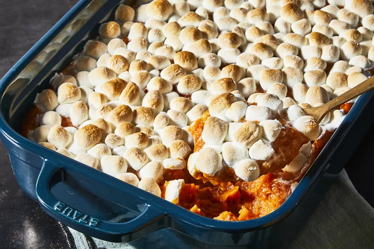

Sweet Potato Casserole with Marshmallows

This sweet potato casserole with marshmallows is creamy, toasty, and delicious!
It's a family favorite for
holidays that you can bake ahead and reheat.
This sweet potato casserole with marshmallows toes the line between side dish and dessert — and we wouldn't have
it any other way. Pureed sweet potatoes are blended with sugar and spices, then topped with marshmallows and
baked to sweet, gooey perfection.
Ingredients
-
Sweet Potatoes
You'll need about five sweet potatoes, peeled and sliced.
-
Brown Sugar
Brown sugar is essential to the cozy, toasty, warmth we're after when we make sweet
potato casserole. Use light for a milder flavor or dark for a more intense flavor.
-
Margarine
This recipe calls for reduced-fat margarine, but you can substitute regular butter if that's what you have on hand.
-
Orange Juice
Three tablespoons of orange juice gives this sweet potato casserole subtle brightness.
-
Cinnamon
Just a pinch of cinnamon adds warmth and brings out the other flavors.
-
Marshmallows
Of course, you'll need a bag of miniature marshmallows (they'll be the star of the show, after all).
Steps
Cook and Mash the Sweet Potatoes
Place the peeled and cubed sweet potatoes in a saucepan and cover with water. Cook over medium-high heat until tender, then drain and mash with a potato masher.Mix and Top the Casserole
Use an electric mixer to mix the mashed (and cooled) sweet potatoes, brown sugar, margarine, cinnamon, and orange juice. Pour the mixture into a baking dish. Top with marshmallows.Bake the Casserole
Bake in a preheated oven until the marshmallows are puffed and lightly browned, about half an hour.